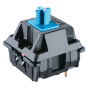

 Cherry MX Blue
Excellent for typing and ideal for users who like to hear and feel a click when they press a key. These tactile keyswitches help ensure accurate data entry.
Cherry MX Brown
A lighter keyswitch with subtle tactile and audible feedback. A great hybrid for typist gamers.
Cherry MX Red
A light, linear keyswitch that is nice for typing and great for gamers looking for something lighter than Cherry Blacks. Cherry MX Red’s linear feel combined with minimal spring force produces fast response times and smooth operation.
Cherry MX Black
A moderately stiff linear keyswitch. The resistance ensures an accurate key press ideal for some gamers. Its linear feel, combined with a slightly higher spring force, has made this keyswitch popular in industrial and point-of-sale environments.